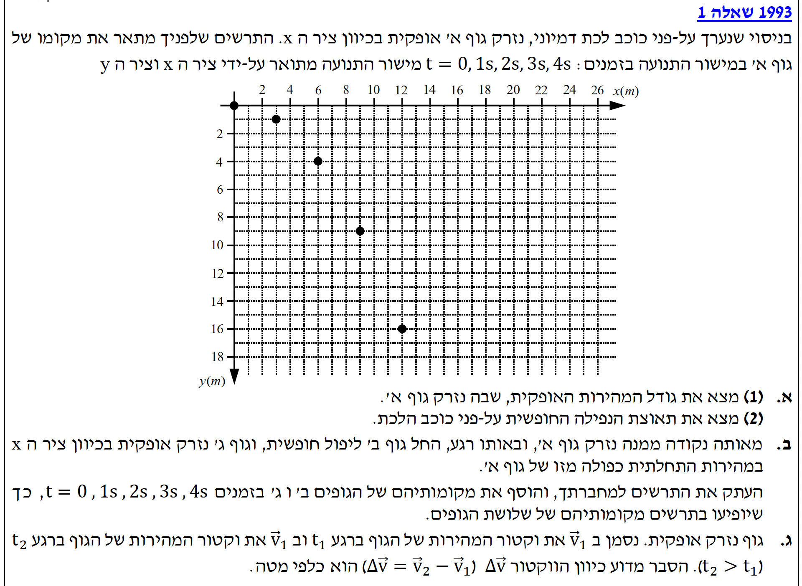
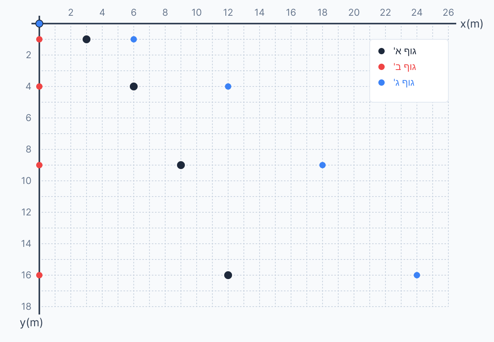

אנו מתבקשים למצוא את גודל המהירות ההתחלתית האופקית שבה נזרק הגוף (את \( v_{0x} \)).
על פי עקרון אי-התלות בין הצירים של גלילאו, התנועה בציר האופקי לא מושפעת מהנפילה, ובהיעדר התנגדות אוויר אין תאוצה אופקית (\( a_{x} = 0 \)). לכן, המהירות האופקית היא קבועה.
נקרא את מיקומי הגוף בציר ה- \( x \) מתוך הגרף בשניות הראשונות (שימו לב שכל משבצת קטנה שווה ל-1 מטר):
בזמן \( t=0 \): \( x_{0} = 0\text{ m} \)
בזמן \( t=1 \): \( x_{1} = 3\text{ m} \)
נציב בנוסחת המהירות הקבועה:
\[ v_{x} = \frac{\Delta x}{\Delta t} = \frac{3 - 0}{1 - 0} = 3\text{ m/s} \]
(ניתן לאמת זאת בעזרת נקודה נוספת: ב- \( t=2 \), שיעור ה- \( x \) הוא 6 מטר, ולכן \( 6 / 2 = 3\text{ m/s} \), כנדרש).
עלינו למצוא את תאוצת הנפילה החופשית של הכוכב הדמיוני (כלומר, את ערכו של \( g' \)).
בציר ה- \( y \), התנועה היא נפילה חופשית (תאוצה קבועה). מכיוון שציר ה- \( y \) בגרף מוגדר חיובי כלפי מטה, גם ההעתק (\( y \)) וגם תאוצת הכובד (\( a_{y} = g' \)) יהיו חיוביים.
נבנה את משוואת המקום-זמן עבור ציר ה- \( y \) ונציב את הנתונים ההתחלתיים:
\[ y = 0 + 0 \cdot t + \frac{1}{2} g' t^{2} \quad \Rightarrow \quad y = \frac{1}{2} g' t^{2} \]
כעת, נקרא נקודה נוחה מתוך הגרף: למשל, בזמן \( t = 2\text{ s} \), שיעור ה- \( y \) של הגוף הוא \( y = 4\text{ m} \).
נציב נתונים אלו למשוואה שלנו:
\[ 4 = \frac{1}{2} \cdot g' \cdot (2)^{2} \]
\[ 4 = \frac{1}{2} \cdot g' \cdot 4 \]
\[ 4 = 2g' \quad \Rightarrow \quad g' = 2\text{ m/s}^{2} \]
כדי להיות בטוחים, נבדוק נקודה נוספת בגרף: עבור \( t = 3\text{ s} \), שיעור ה- \( y \) הוא 9 מטר.
נציב \( t=3 \) במשוואה עם התאוצה שמצאנו: \( y = \frac{1}{2} \cdot 2 \cdot 3^{2} = 9\text{ m} \). ואכן, הנתונים מתאימים בשלמות!
עלינו להעתיק את הגרף ולסמן עליו את מיקומיהם של כל שלושת הגופים (א', ב', ג') עבור הזמנים \( t = 0, 1, 2, 3, 4 \) שניות.
לפי עקרון אי-התלות בין הצירים, התנועה האנכית זהה לחלוטין עבור כל הגופים! מהירות הזריקה האופקית לא משפיעה בשום צורה על קצב הנפילה מטה. לכן, לכל שלושת הגופים יהיו בדיוק את אותם ערכי ה- \( y \) בכל שנייה:
\( y(t) = 0, 1, 4, 9, 16 \).
ההבדל היחיד ביניהם הוא התקדמותם בציר ה- \( x \):
להלן השרטוט הגרפי של תנועת הגופים (א' בשחור, ב' באדום, ג' בכחול):

עלינו להסביר פיזיקלית מדוע כיוונו של וקטור הפרש המהירויות, המסומן כ- \( \Delta\vec{v} = \vec{v}_{2} - \vec{v}_{1} \), הוא תמיד מופנה אנכית כלפי מטה.
אפשר לגשת להסבר בשתי דרכים פשוטות ונכונות המבוססות על קינמטיקה טהורה:
דרך ראשונה (הבנת פירוק לרכיבים):
נפרק את המהירויות של הגוף לרכיבי \( x \) ו- \( y \).
מכיוון שהגוף בתנועה שוות-מהירות בציר האופקי, המהירות שלו בכיוון \( x \) נשארת קבועה לאורך כל המסלול. כלומר: \( \Delta v_{x} = 0 \).
מנגד, בציר האנכי, הגוף צובר מהירות כלפי מטה בגלל תאוצת הכובד. כלומר, ההבדל היחיד בין המהירות בנקודה הראשונה למהירות בנקודה השנייה הוא תוספת של מהירות כלפי מטה. משום כך, כשנחסר את הווקטורים (\( \vec{v}_{2} - \vec{v}_{1} \)), הרכיבים האופקיים יבטלו זה את זה לחלוטין, ויישאר רק הרכיב האנכי המצביע מטה.
דרך שנייה (הגדרת התאוצה):
על פי הנוסחה הקינמטית, תאוצה היא קצב שינוי המהירות: \( \Delta\vec{v} = \vec{a} \cdot \Delta t \).
כיוון שזמן (\( \Delta t \)) הוא סקלר חיובי, כיוונו של הווקטור \( \Delta\vec{v} \) חייב להיות זהה לחלוטין לכיוונו של וקטור התאוצה \( \vec{a} \). מכיוון שהתאוצה היחידה הפועלת על הגוף היא תאוצת הכובד, המכוונת כלפי מטה אל מרכז הכוכב, המסקנה ההכרחית היא שגם וקטור השינוי במהירות מופנה כלפי מטה.